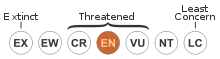

Testing PI:importwiki
Testing import of material from Wiki, This is in an experimental stage and some work remains to be done. The concept of dpath for selecting from a flat documentstructure is not waterproof, but it works on simple constructs.
This page selects material from a Wikipedia-page: http://en.wikipedia.org/wiki/Tiger
A section without references
Taxonomy and etymology
In 1758, Linnaeus first described the species in his work Systema Naturae under the scientific name Felis tigris. In 1929, the British taxonomist Reginald Innes Pocock subordinated the species under the genus Panthera using the scientific name Panthera tigris.
The word Panthera is probably of Oriental origin and retraceable to the Ancient Greek word panther, the Latin word panthera, the Old French word pantere, most likely meaning "the yellowish animal", or from pandarah meaning whitish-yellow. The derivation from Greek pan- ("all") and ther ("beast") may be folk etymology that led to many curious fables.
The word "tiger" is retraceable to the Latin word tigris meaning a spotted tigerhound of Actaeon. The Greek word tigris is possibly derived from a Persian source.
A section with references, only listelements and images

In 1977, the Chinese government passed a law banning the killing of wild tigers, but this may have been too late to save the subspecies, since it is possibly already extinct in the wild. There are currently 59 known captive South China tigers, all within China, but these are known to be descended from only six animals. Thus, the genetic diversity required to maintain the subspecies may no longer exist. Currently, there are breeding efforts to reintroduce these tigers to the wild.
A section accessed with xpath
| Tiger Temporal range: Early Pleistocene – Recent |
|
|---|---|

|
|
| A Bengal tiger (P. tigris tigris) in India's Ranthambhore National Park. | |
| Conservation status | |
|

Endangered (IUCN 3.1) |
|
| Scientific classification | |
| Kingdom: | Animalia |
| Phylum: | Chordata |
| Class: | Mammalia |
| Order: | Carnivora |
| Family: | Felidae |
| Genus: | Panthera |
| Species: | P. tigris |
| Binomial name | |
|
Panthera tigris
(Linnaeus, 1758) |
|
| Subspecies | |
|
P. t. tigris
|
|

|
|
| Tiger's historic range in ca. 1850 (pale yellow) and range in 2006 (in green). | |
| Synonyms | |
|
Tigris striatus
Severtzov, 1858
|
|